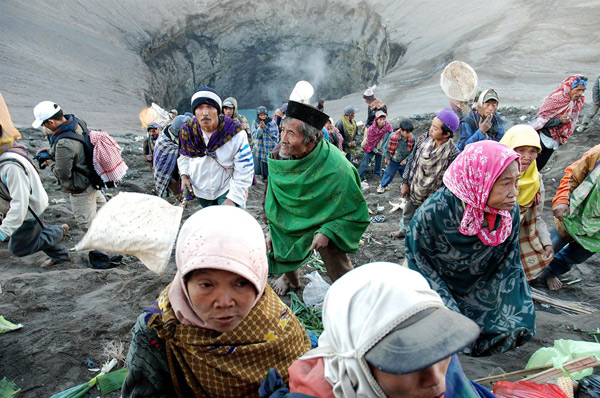

Upacara Kasada merupakan salah satu ritual meminta pengampunan dari Brahma. Dalam upacara ini, masyarakat Suku Tengger melakukan pengorbanan dengan membuang pengorbanannya ke kawah Gunung Tengger. Upacara ini dilakukan setahun sekali tetapi untuk tanggal atau harinya tidak tetap.